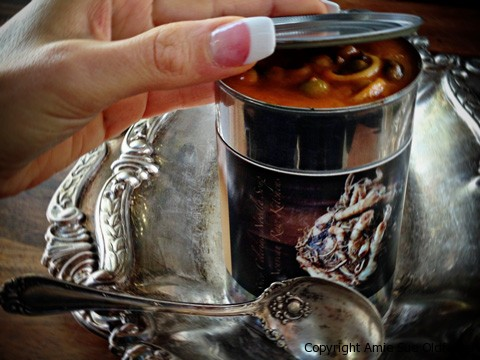

Spicy Celeriac Noodle Soup
~ raw, vegan, gluten-free, nut-free ~
The first thing I think when I see a celeriac root is… only the love of mother could find beauty such a thing. It is truly the beauty of the beast. Celeriac or root celery is a closely related variety to the common leaf celery, grown for its knobby underground root. Root celery is a popular winter-season root vegetable. It has a coarse, knobby, outer surface with small rootlets. While inside, smooth white flesh with a celery-like flavor.
Today, I decided to use celeriac root as my noodle in this soup recipe. There are many wonderful reasons why… It is very low in calories, 100 g of root contains just 42 calories! For this reason, alone, it can lure a person to try this veggie out. But its smooth flesh also has some health benefiting plant-nutrients, minerals, vitamins, and dietary fiber. As in carrots and other members of Apiaceae family, celeriac too contains many poly-acetylene anti-oxidants such as falcarinol, falcarindiol, panaxydiol, and methyl-falcarindiol.
Several research studies from scientists at the University of Newcastle at Tyne found that these compounds have an anti-cancer function and offer protection from colon cancer and acute lymphoblastic leukemia. Celeriac is very a good source of vitamin K which can help increase bone mass by promoting osteotropic activity in the bones. Research studies suggest that it also has established a role in Alzheimer’s disease patients by limiting neuronal damage in the brain.
Feeling a little puffy around the edges? Celeriac is a very effective diuretic. The sodium content in celeriac helps in eliminating the excess acids and water from the body. Therefore, it reduces stiffness and loosens the musculoskeletal system.
Ok, so by now, you may be ready to hit the ground running to your nearest grocer to pick one of these gems up! They are common in most stores, so I don’t think you will have any issues finding one. But once you find them, how to select the right one? Buy medium-size tubers measuring about 3-4 inches in diameter. Look for smooth, even surface at roots, indicating that they are easy to peel and have a subtle flavor. Avoid large, over-matured roots and roots with surface cracks. Once at home, store celeriac as you would turnips and carrots. It has very a good shelf life quality and keeps well for 3-4 months if stored between 0°C and 5°C and not allowed to dry out. So keep it in a plastic bag inside the vegetable compartment of the refrigerator. Do not keep in the deep freezer.
I know many of my readers are not 100% raw. This soup can be eaten raw or slightly cooked. Both my husband and I enjoyed it raw. I had a friend taste test it, and he liked it raw too. I left the pot in the dehydrator overnight set at 95 degrees. It was nice and warm, but the noodles were still crunchy. You can also heat this on the stove to help soften the noodles but keep in mind that it won’t be raw. It’s all up to you.
 photos in a old can") Ingredients:
Ingredients:
yields 12 cups
Combine in blender:
- 2 cups water
- 1/4 cup sun-dried tomatoes soaked in 1 cup water
- 4 large ripe tomatoes
- 2 large carrots, rough chopped ( 1 1/2 cups)
- 2 Tbsp raw apple cider vinegar
- 1 Tbsp chili powder
- 1 Tbsp lemon juice
- 2 Tbsp Braggs Aminos
- 2 Tbsp olive oil
- 4 Medjool dates, pitted
- 1/2 tsp fresh ground black pepper
- 1/4 tsp Himalayan pink salt
- 20 drops liquid stevia
Hand mix in:
- 1 tomato, diced, deseeded (1/2 cup)
- 1 medium sweet onion, diced
- 2 cups mushrooms, diced
- 1 cup peas
- 1 cup corn
- celeriac noodles (2 cups packed)
Preparation:
- Soak the sun-dried tomatoes in 1 cup of hot water to rehydrate them for 10+ minutes. Don’t drain and discard the soak water; we will add this to the soup for the flavor.
- Peel the outer layer of skin off of the celeriac root. Place it on the spiralizer and make noodles. If you don’t have a spiralizer, you can use your potato peeler and just peel away, making thin noodles. Set aside.
- Before placing them in the soup pot, I gave them a rough chop. I did this only because those noodles can be VERY long and hard to eat, but then that can add a lot of extra fun to the whole experience as well.
- In the blender combine; the sun-dried tomatoes, soak water, tomatoes, carrots, apple cider vinegar, chili powder, Braggs, olive oil, dates, and salt. Blend until creamy.
- Pour into a glass bowl and add the; diced tomato, onion, mushroom, peas, noodles, and corn. Stir together.
- Cover the bowl with plastic wrap and place it in the dehydrator at 145 degrees (F) for 1 hour then reduce to 115 degrees (F) and continue to warm until the veggies are soft. Serve right away.
- Store leftovers in the fridge.
Sous Chef Substitutes:
- Mushrooms ~ If you don’t have fresh mushrooms you can use dehydrated mushrooms. For 2 cups of fresh, you will need 3 oz (90 g) of dried. Rehydrate in 1 1/2 cup of hot water to soften.
- Braggs Aminos ~ with the same measurement amount you can use Coconut Aminos, gluten-free Tamari, soy sauce, or Nama Shoyu.
- Raw apple cider vinegar ~ you can use 2 Tbsp lemon or lime juice or 1 1/2-2 tsp tamarind concentrate or paste (souring agent).
- Spiralizer ~ see this link for noodles ideas.
Warming Suggestions:
- Allow the soup to warm to room temperature and enjoy.
- Place the serving bowl in hot water, allowing it to heat up before adding the soup. This will help take a little extra chill off of the soup and make it cozy warm to hold in your hands.
- Pour a serving size of soup in a mason jar, place lid on top and tighten… immerse the jar in hot water till it warms the soup to your liking.
- Pour into a small saucepan and heat on the stove.
- Use your fingertip as the temperature gauge; it shouldn’t get too hot for your finger.
- You can also use a thermometer gauge if this concerns you.
- Dehydrator – if you have a “box” shaped dehydrator such as the Excalibur, pour the soup into a wide mouth baking dish and turn the heat to 145 (F) degrees. Warm for 30-60 minutes.
- You can also place the temperature at 115 degrees and heat for 3-4 hours. You will need to gauge this. The more soup that exposed to the air, the quicker it will warm.
Don’t be afraid! It won’t bite. :) I promise. I think that this would be
a fun veggie to introduce to your kids. They often find gnarly looking things such as
this to be cool. Not to mention the whole noodle making thing is fun for them too.
Photo Above ~ Peel the root with a knife and/or potato peeler. I used both.
Ok, so I have a twisted sense of humor… lol I just couldn’t resist. I mean really, would
you reach for this can of soup off of the grocery shelf with a picture like that on the can?!
It looks like some kind of ration up out of a bomb shelter.

© AmieSue.com